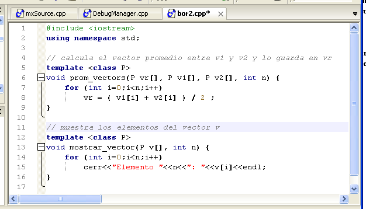

Coloreado de sintáxis
El coloreado de sintaxis le ayuda a identificar rápidamente distintos elementos en su código fuente. Consiste en la presentación del mismo utilizando diferentes colores para y estilos (normal, negrita o cursiva) para cada tipo de elemento (por ejemplo, constantes numéricas, constantes de carecter, palabras reservadas, operadores, directivas de preprocesador, comnetarios, etc).
Para activar o desactivar el coloreado de sintaxis en un fuente utilice la opción Colorear Sintaxis del menú Ver, o su atajo de teclado Shift+F11.

Puede configurar los colores y estilos que ZinjaI utiliza para cada elemento de un código C++ con el botón "Definir Colores" de la pestaña Estilo de diálogo de Preferencias. ZinjaI ofrece dos perfiles de colores predefinidos (uno que utiliza texto oscuro sobre fondo blanco, otro que utiliza texto claro sobre fondo negro) que puede utilizar directamente o modificar para generar nuevas combinaciones. Encontrará los perfiles disponibles en una lista desplegable en la parte inferior del cuadro de diálogo de configuración de colores
Actualemente, además de colorear códigos C++, el editor es capaz de colorear la sintaxis de archivos Makefile, XML y parcialmente HTML.
Notar que algunas funcionalidades especiales como por ejemplo el autocompletado se apoyan en la información de este coloreado para analizar más rápidamente el código, por lo que no es recomendable desactivarlo, ya que se desactivaran simultáneamente otras características (ver pestaña Asistencias de díalogo de Preferencias).